Fitting PSF models: Symmetric 2D Gaussian function
A single molecule emitter can be treated as a point source in SMLM data. The impulse response of a microscope to a point-like source is described by the point-spread function (PSF). The result of fitting a PSF model to an image of a single molecule is an estimate of the position of the molecule, its imaged size, and its intensity.
PSF model
It has been shown [3, 2] that the Gaussian function provides a very good approximation of the real PSF of a microscope. This is mainly due to pixelation effects and the presence of noise, which makes the difference between the Gaussian function and the real PSF negligible. The advantage of Gaussian PSF models are their simplicity, robustness, and computational efficiency.
A common approximation of the real PSF is a symmetric two-dimensional Gaussian function given by the formula
| 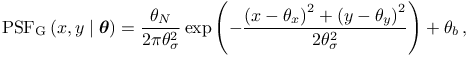 | (1) |
where 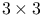 gives the expected photon count at the pixel 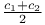 for coefficients 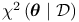. The entries of the coefficient vector 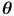 are follows: 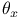 and 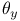 are the sub-pixel molecular coordinates, 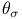 is the imaged size of the molecule, 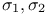 corresponds to the total number of photons emitted by the molecule, and 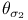 corresponds to the background signal level.
Fitting of model parameters
Fitting of the model parameters can be done using least squares or maximum-likelihood methods. See PSF fitting methods for more information.
Crowded-field
ThunderSTORM supports fitting of multiple PSF models simultaneously in a single fitting region. See crowded field for more information.
Localization uncertainty
Let 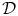 be the standard deviation of a fitted Gaussian blob in nm, 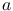 is the (backprojected) pixel size in nm, 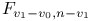 is the number of photons detected for a given molecule, and 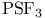 is the background signal level in photons calculated as the standard deviation of the residuals between the raw data and the fitted PSF model. The uncertainty in the lateral position of a molecule can be approximated by the formula [3]
| 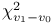 | (2) |
The previous equation can be further adjusted to take EM gain of EMCCD cameras into account [1], giving the expression
| 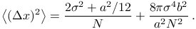 | (3) |
References
- [1] (2010-01) Localization capability and limitation of electron-multiplying charge-coupled, scientific complementary metal-oxide semiconductor, and charge-coupled devices for superresolution imaging, Journal of biomedical optics 15 (6), pp. 066005. External Links: Document, ISSN 1560-2281. Cited by: Localization uncertainty.
- [2] (2010) Accuracy of the gaussian point spread function model in 2D localization microscopy, Optics Express 18 (24), pp. 24461–24476. External Links: Document. Cited by: PSF model.
- [3] (2002-05) Precise nanometer localization analysis for individual fluorescent probes, Biophysical journal 82 (5), pp. 2775–83. External Links: Document, ISSN 0006-3495. Cited by: PSF model, Localization uncertainty.
![[LOGO]]()